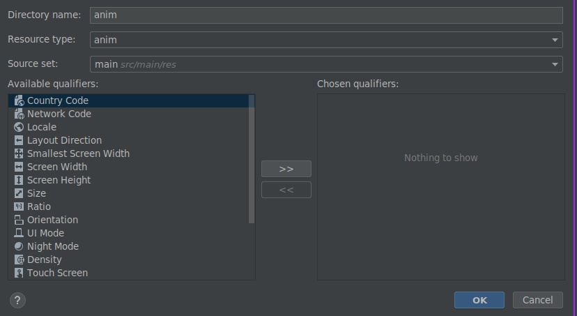

Lab 12: Splash Screens
Introduction
Android Splash Screen is the first screen visible to the user when the application is launched. Splash screen is one of the most vital screens in the application since it’s the user’s first experience with the application. Splash screens are used to display some animations (typically of the application logo) and illustrations while some data for the next screens are fetched.
Typically, the Activity that has the following intent filter set in the AndroidManifest.xml file is the Splash Activity.
<intent-filter>
<action android:name="android.intent.action.MAIN" />
<category android:name="android.intent.category.LAUNCHER" />
</intent-filter>
Android Splash Screen Example Project Structure

Task 1: Classical Approach
Remember to open a new project in Android studio and call it
splashscreen.
- Don't modify the
MainActivity.javafile. - Modify the
AndroidMainfest.xml- to launch Splash screen
<?xml version="1.0" encoding="utf-8"?>
<manifest xmlns:android="http://schemas.android.com/apk/res/android"
package="com.example.splashscreen">
<application
android:allowBackup="true"
android:icon="@mipmap/ic_launcher"
android:label="@string/app_name"
android:roundIcon="@mipmap/ic_launcher_round"
android:supportsRtl="true"
android:theme="@style/AppTheme">
<activity android:name=".SplashActivity"
android:theme="@style/SplashTheme">
<intent-filter>
<action android:name="android.intent.action.MAIN" />
<category android:name="android.intent.category.LAUNCHER" />
</intent-filter>
</activity>
<activity android:name=".MainActivity"/>
</application>
</manifest>
- Create a
SplashActivity.ktfile and modify the content as such:
package com.example.splashscreen;
import android.content.Intent
import android.os.Bundle
import android.os.Handler
import androidx.appcompat.app.AppCompatActivity
class SplashActivity : AppCompatActivity() {
override fun onCreate(savedInstanceState: Bundle?) {
super.onCreate(savedInstanceState)
setContentView(R.layout.activity_splash)
Handler().postDelayed({
// This method will be executed once the timer is over
val i = Intent(this@SplashActivity, MainActivity::class.java)
startActivity(i)
finish() // explore the class Intent.
}, 5000) // Number is in milliseconds.
}
}
- Create an
activity_splash.xmlin theres/layoutfolder
<?xml version="1.0" encoding="utf-8"?>
<android.support.constraint.ConstraintLayout xmlns:android="https://schemas.android.com/apk/res/android"
xmlns:app="https://schemas.android.com/apk/res-auto"
xmlns:tools="https://schemas.android.com/tools"
android:layout_width="match_parent"
android:layout_height="match_parent"
android:background="@android:color/black"
tools:context="com.example.splashscreen.SplashActivity">
<ImageView
android:id="@+id/imageView"
android:layout_width="72dp"
android:layout_height="72dp"
android:src="@mipmap/ic_launcher"
app:layout_constraintBottom_toBottomOf="parent"
app:layout_constraintLeft_toLeftOf="parent"
app:layout_constraintRight_toRightOf="parent"
app:layout_constraintTop_toTopOf="parent" />
<ProgressBar
android:layout_width="wrap_content"
android:layout_height="wrap_content"
android:indeterminate="true"
app:layout_constraintLeft_toLeftOf="parent"
app:layout_constraintRight_toRightOf="parent"
android:layout_marginTop="8dp"
app:layout_constraintTop_toBottomOf="@id/imageView" />
</android.support.constraint.ConstraintLayout>
If you run this in the emulator, what happens?
Click to see

Did you see the blank page that came up before the Splash Screen was visible to you?
The above approach isn’t the correct approach. It’ll give rise to cold starts.
The purpose of a Splash Screen is to quickly display a beautiful screen while the application fetches the relevant content if any (from network calls/database). With the above approach, there’s an additional overhead that the SplashActivity uses to create its layout.
It’ll give rise to slow starts to the application which is bad for the user experience (wherein a blank black/white screen appears).
Aninmation
This has been written for SDK 33, and core-ktx:1.8.0 so ensure you follow the steps below:
-
Open the build gradle file change your
compileSdk 34tocompileSdk 33, and change thetargetSdk 33totargetSdk 32 -
Navigate down to the
dependicies {...}and change the following line from -> to:implementation 'androidx.core:core-ktx:+'->implementation 'androidx.core:core-ktx:1.8.0'
-
Sync your project to download the new dependicies and sdk.
-
Ensure you have a mobile emulator with API 30, such as
Pixel Pro API 30. -
Create a new resource directory in the res directoru called
animof Resource typeanim, like below:
-
Reproduce the following layout for
activity_main.xml:
-
Modify the
strings.xml, and set the text for each button:<string name="app_name">MobileApps-SplashScreens</string> <string name="trans_slide_in_out">Slide in out</string> <string name="trans_rotate">Rotate</string> <string name="trans_slide_down">Slide down</string> <string name="trans_slide_up">Slide up</string> <string name="trans_slide_in_left">Slide in left</string> <string name="trans_slide_out_left">Slide out left</string> <string name="trans_slide_in_right">Slide in right</string> <string name="trans_slide_out_right">Slide out right</string> <string name="trans_fade_out">Fade out</string> <string name="trans_scale">Scale</string> -
We are going to produce the following files that will contain our animations for transitioning from one activity to another:

-
Now we will create those 9 files inside the
res/animdirectory:-
rotate.xml<set xmlns:android="http://schemas.android.com/apk/res/android"> <!-- Rotate the view from 0 degrees to 359 degrees --> <rotate android:fromDegrees="0" android:toDegrees="359" android:pivotX="50%" android:pivotY="50%" android:duration="1000" /> </set> -
slide_in_left.xml<set xmlns:android="http://schemas.android.com/apk/res/android"> <translate android:fromXDelta="-100%" android:toXDelta="0" android:duration="1000"/> </set> -
slide_out_left.xml<set xmlns:android="http://schemas.android.com/apk/res/android"> <translate android:fromXDelta="0" android:toXDelta="-100%" android:duration="1000" /> </set> -
slide_in_right.xml<set xmlns:android="http://schemas.android.com/apk/res/android"> <translate android:fromXDelta="100%" android:toXDelta="0" android:duration="1000" /> </set> -
slide_out_right.xml<set xmlns:android="http://schemas.android.com/apk/res/android"> <translate android:fromXDelta="0" android:toXDelta="100%" android:duration="1000" /> </set> -
slide_down.xml<set xmlns:android="http://schemas.android.com/apk/res/android"> <translate android:fromYDelta="0" android:toYDelta="100%" android:duration="1000"/> <alpha android:fromAlpha="1" android:toAlpha="0.5"/> </set> -
slide_up.xml<set xmlns:android="http://schemas.android.com/apk/res/android"> <translate android:fromYDelta="100%" android:toYDelta="0" android:duration="1000"/> <alpha android:fromAlpha="0.5" android:toAlpha="1"/> </set> -
scale_in.xml<scale xmlns:android="http://schemas.android.com/apk/res/android" android:fromXScale="0.0" android:fromYScale="0.0" android:toXScale="1.0" android:toYScale="1.0" android:pivotX="50%" android:pivotY="50%" android:duration="1000" /> -
scale_out.xml<scale xmlns:android="http://schemas.android.com/apk/res/android" android:fromXScale="1.0" android:fromYScale="1.0" android:toXScale="0.0" android:toYScale="0.0" android:pivotX="50%" android:pivotY="50%" android:duration="1000" />
-
-
Revisit
MainActivty.ktso we can implement the button functionality to invoke each animation. -
Your
class MainActivty : ...needs to implement aView... class MainActivity : AppCompatActivity(),View.OnClickListener { ... } -
Create a reference for each Button on the
activity_main.xmlby usingfindViewById(), remember eachR.id.<name>is how I defined them in theactivity_main.xml:val slideInLeftButton : Button = findViewById(R.id.slideLeftInButton) val slideOutLeftButton : Button = findViewById(R.id.slideLeftOutButton) val slideInRightButton : Button = findViewById(R.id.slideRightInButton) val slideOutRightButton : Button = findViewById(R.id.slideRightOutButton) val slideUpButton : Button = findViewById(R.id.slideUpButton) val slideDownButton : Button = findViewById(R.id.slideDownButton) val fadeButton : Button = findViewById(R.id.fadeOutButton) val rotateButton : Button = findViewById(R.id.rotateButton) val scaleButton : Button = findViewById(R.id.scaleButton) -
Now we are going to
setOnClickListenerfor each button, you will need to reproduce this line for each button:... slideDownButton.setOnClickListener(this) slideUpButton.setOnClickListener(this) ... -
Outside of the
override fun OnCreate?(){ ... }, create a new function calledonClick():... override fun onClick(view: View?) { val intent = Intent(this, MainActivity::class.java) startActivity(intent) when (view?.id) { R.id.fadeOutButton-> { overridePendingTransition(android.R.anim.fade_out,android.R.anim.fade_in) } R.id.slideLeftInButton -> { overridePendingTransition(0,R.anim.slide_in_left) } R.id.slideLeftOutButton -> { overridePendingTransition(0,R.anim.slide_out_left) } } finish() } ...This function will detect when each button is pressed and invoke the corresponding animation. All we are doing here is reopening the
MainActivitywith that animation.If you run this in its current state you will see the following:

-
Complete the rest of the buttons.
-
Run the activity and you should see the following:

Downloaded a completed version of the lab here: SplashScreens.zip